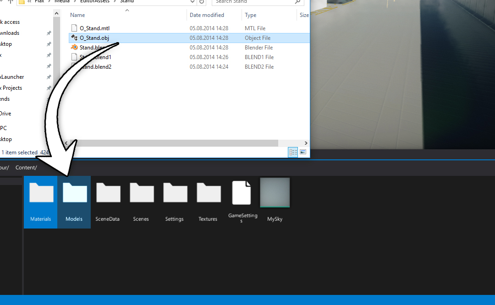
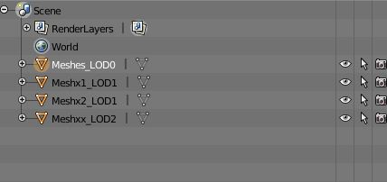
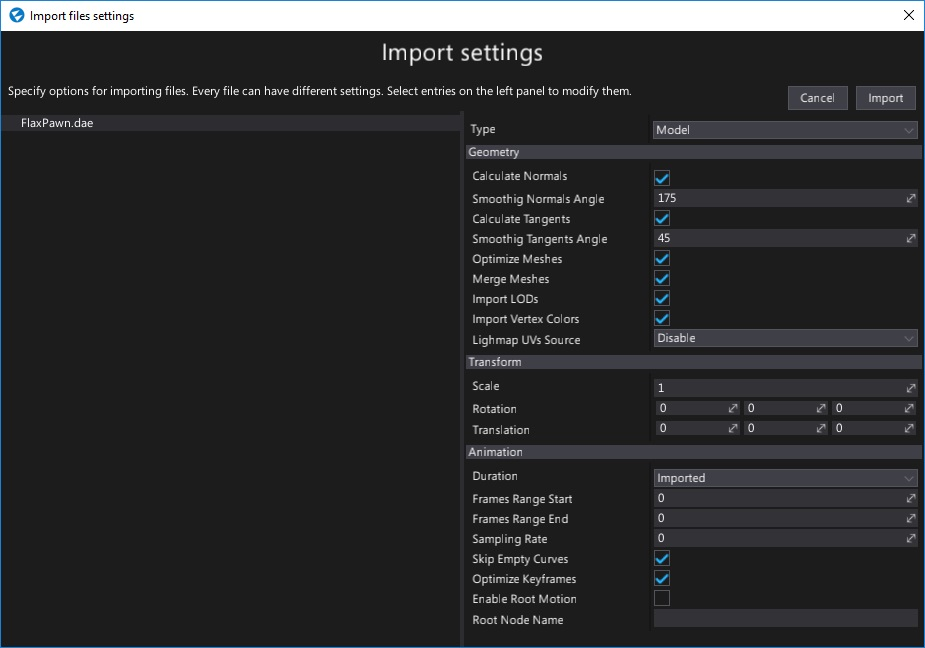

Importing models
Importing model files works in the same way as for other asset types. Simply drag and drop the model files from Explorer into the Content window or use the Import button.

After choosing the files Import file settings dialog shows up. It's used to specify import options per model. In most cases the default values are fine and you can just press the Import button.
Note
Using Import file settings dialog you can select more than one model at once (or use Ctrl+A to select all) and specify import options at once.
Every model can be reimported (relative path to the source file is cached) and import settings modified using Model Window.
Supported file types
Flax Engine supports importing the following list of file types as models:
.fbx- currently recommended format.gltf.glb.obj.x.dae.blend.lwo.lws.lxo.ply.q3o.q3s.stl
Importing model LODs
Flax supports up to 6 model level of details. To import them use LODx (where x is a LOD index, zero-based) postfix for object nodes in model file. Also when importing model ensure to check the Import LODs option.
Example usage (from Blender):

Model import settings

Flax uses the same import settings data scheme for models, skinned models and animations as they all can be imported from the same source files (eg. .fbx or .dae).
| Property | Description | ||||||||||||||
|---|---|---|---|---|---|---|---|---|---|---|---|---|---|---|---|
| Type | The type of the imported asset. Possible options:
|
||||||||||||||
| Geometry | |||||||||||||||
| Calculate Normals | If checked, model normal vectors will be recalculated. | ||||||||||||||
| Smoothing Normals Angle | Specifies the maximum angle (in degrees) that may be between two face normals at the same vertex position that their are smoothed together. Used only if Calculate Normals is checked. The default value is 175. | ||||||||||||||
| Calculate Tangents | If checked, model tangent vectors will be recalculated. | ||||||||||||||
| Smoothing Tangents Angle | Specifies the maximum angle (in degrees) that may be between two vertex tangents that their tangents and bi-tangents are smoothed. Used only if Calculate Tangents is checked. The default value is 45. | ||||||||||||||
| Optimize Meshes | If checked, model meshes geometry will be optimized. Duplicated or invalid vertices will be removed. Index buffer will be reordered to improve performance and other modification will be applied. However, importing time will be increased. | ||||||||||||||
| Merge Meshes | If checked, meshes with the same materials will be merged. Helps with rendering performance. | ||||||||||||||
| Import LODs | If checked, model importer will try to find LODs and import them. See Importing model LODs section to learn more. | ||||||||||||||
| Import Vertex Colors | If checked, vertex colors will be imported (channel 0 only, if exists). | ||||||||||||||
| Import Blend Shapes | If checked, blend shapes will be imported (morph targets). | ||||||||||||||
| Lightmap UVs Source | Specifies model lightmap texture coordinates source. Can import them from the source model or generate them with in-build tool. Possible options:
|
||||||||||||||
| Transform | |||||||||||||||
| Scale | Custom uniform scale applied to the imported model data. | ||||||||||||||
| Rotation | Custom import geometry rotation applied to the imported model data. | ||||||||||||||
| Translation | Custom import geometry offset applied to the imported model data. | ||||||||||||||
| Center Geometry | If checked, the imported geometry will be shifted to the center of mass. | ||||||||||||||
| Animation | |||||||||||||||
| Duration | Specifies the imported animation duration mode. Can use the original value or overriden by settings. Possible options:
|
||||||||||||||
| Frames Range Start | Imported animation first frame index. Used only if Duration mode is set to Custom. | ||||||||||||||
| Frames Range End | Imported animation last frame index. Used only if Duration mode is set to Custom. | ||||||||||||||
| Default Frame Rate | The imported animation default frame rate. Can specify the default frames per second amount for imported animation. If value is 0 then the original animation frame rate will be used. | ||||||||||||||
| Sampling Rate | The imported animation sampling rate. If value is 0 then the original animation speed will be used. | ||||||||||||||
| Skip Empty Curves | If checked, the imported animation will have removed tracks with no keyframes or unspecified data. Disable it to leave the data as it is. | ||||||||||||||
| Optimize Keyframes | If checked, the imported animation channels will be optimized to remove redundant keyframes. This option helps with getting better animation sampling performance. | ||||||||||||||
| Enable Root Motion | If checked, enables root motion extraction support from this animation. | ||||||||||||||
| Root Node Name | The custom node name to be used as a root motion source. If not specified the actual root node will be used. | ||||||||||||||
| Animation Index | The zero-based index for the animation clip to import. If the source file has more than one animation it can be used to pick a desired clip. | ||||||||||||||
| Generate LODs | If checked, the importer will generate a sequence of LODs based on the base LOD index. | ||||||||||||||
| Base LOD | The index of the LOD from the source model data to use as a reference for following LODs generation. | ||||||||||||||
| LOD Count | The amount of LODs to include in the model (all reaming ones starting from Base LOD will be generated). | ||||||||||||||
| Triangle Reduction | The target amount of triangles for the generated LOD (based on the higher LOD). Normalized to range 0-1. For instance 0.4 cuts the triangle count to 40%. | ||||||||||||||
| Import Materials | If checked, the importer will create materials for model meshes as specified in the file. | ||||||||||||||
| Import Textures | If checked, the importer will import texture files used by the model and any embedded texture resources. | ||||||||||||||
| Restore Materials On Reimport | If checked, the importer will try to restore the assigned materials to the model slots. |